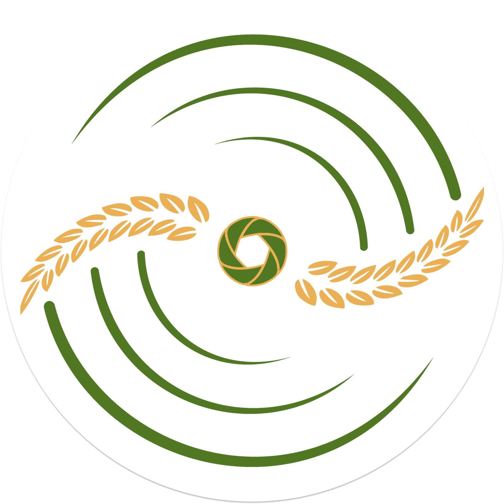

Dari Langit, untuk Bumi.
Pada hakekatnya, manusia terlahir dan berpijak pada Bumi. Namun, telah lama pula manusia berambisi untuk menguasai langit. Apakah langit dapat membantu dalam mengubah cara pandang kehidupan kita di Bumi?
Jawabannya adalah, iya.
